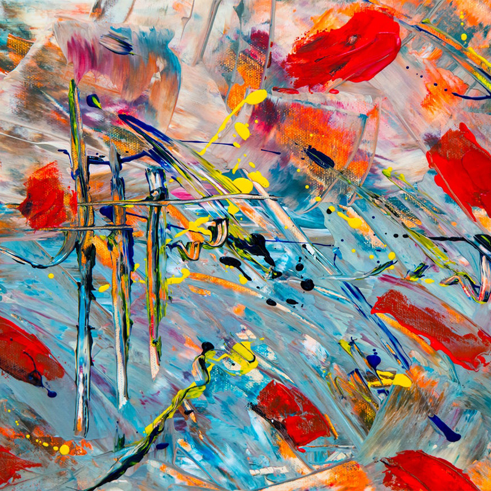

예술 성향 테스트
오직 당신만을 위한 예술 작품을 찾아갈 작은 카페
지친 몸을 이끌고 집으로 돌아가는 길, 온갖 고민과 불안이 몰려온다. 애써 끝나지 않는 고민은 접어두고 집에 도착한 내 모습을 그려본다.
Q. 집에 돌아가서 뭐하지?
- 침대가 최고야, 누워서 쉰다.
- TV부터 틀어놓는다.
- 간만에 혼술을 한다.
- 친한 친구에게 연락해본다.
집에서 할 일에 대한 생각이 끝나갈 때쯤, 어느덧 집 근처 골목길까지 왔다. 골목에 들어서니 거리의 소음이 사라지고 점차 고요해진다. 집으로 돌아가는 길의 적막함을 채워줄 오늘의 BGM이 필요한 순간이다.
Q. 어떤 음악을 들을까?
- 추억에 젖게 할 레트로 음악
- 저녁에 어울리는 잔잔한 노래
- 분위기를 바꿔줄 신나는 밴드 음악
- 편안한 클래식 연주

틀었던 노래가 끝나갈 무렵, 매일 지나다니던 골목 한 편에서 그동안 보지 못했던 지하로 내려가는 계단이 하나 보인다. 반지하로 통하는 계단인 거 같다. 계단 아래에서 따뜻한 네온 불빛이 새어 나오고 있다.
Q. 계단을 바라보는 당신
- 낯선 공간에 들어갈 생각에 긴장된다.
- 별로 궁금하진 않지만 다가가 본다.
- 간만의 새로운 발견에 설렌다.
- 무섭지만 궁금함을 이기지 못하고 다가간다.
입구에 가까이 다가가니 지하로 내려가는 계단 양옆의 벽에서 은은하게 빛나는 조명이 따뜻하면서도 신비로운 느낌을 자아낸다. 계단의 끝에 있는 ‘반지하 카페’라는 네온 사인이 눈에 들어온다. 천천히 발걸음을 내딛어 한칸씩 아래로 내려간다. 오랜만에 느껴보는 두근거림이다.
터치해서 넘어가기
문을 열고 카페에 들어서니 일반적인 카페에서 나는 커피향은 나지 않고 조금은 낯설지만 기분 좋은 향기가 난다. 그리 넓지 않은 카페에 손님은 아무도 없다. 벽에는 개성 있는 그림들이 걸려 있는데 카페에 왔다기 보다 비밀 전시장에 온 느낌이다.
Q. 카페에 처음 들어온 직후
- 바로 카운터로 향한다.
- 카페 구석구석을 둘러본다.
- 카페 사진을 찍는다.
- 일단 자리에 앉는다.
카페에 들어왔지만 사람은 아무도 보이지 않는다. 잠시 주변을 둘러보다 벽에 걸려있는 그림 한 점이 눈에 들어온다.
Q. 가장 눈에 들어오는 그림은
- 

한동안 가만히 선채로 그림을 바라보았다. 카페의 신비로운 분위기 때문인지 그림이 나에게 어떤 말을 건내려는 것처럼 보였다. 나는 점점 그림에 빠져들어갔다.
그때 주머니에서 진동이 울렸다. 내일 만나기로 한 친구의 문자다.
Q. 주말에 영화보고 나서 하고 싶은 거 있어?
- 날씨도 좋은데 밖에서 신나게 놀고 싶다.
- 맛있는 거 먹고 싶다.
- 사람 없는 곳 가서 한적하게 있고 싶어.
- 영화도 좋은데.. 난 바다 보러 가고 싶다..
“어서오세요~"
문 열리는 소리가 들려 그쪽을 바라보니 카운터 안쪽에서 페인트로 얼룩진 작업용 앞치마를 입은 사람이 문을 열고 나온다.
나는 홀린듯 바처럼 보이는 카운터 앞에 앉는다.
Q. 카페 매니저를 본 당신
- “카페 분위기가 좋네요!” 인사를 건낸다.
- “여기가 그 반지하 카페인가요?!” 알고 온 척을 한다.
- “여긴 무슨 카페에요?” 궁금한 것을 질문한다.
- “...” 아무 말도 하지 않는다.
그는 이곳이 누구든 쉬어갈 수 있는 곳이라고 소개했다. 나는 쉬어간다는 게 무슨 의미인지 의아한 마음에 카페의 메뉴를 물었다. 그는 메뉴는 정해져있지 않다며 음료를 먼저 권했다.
Q. “마실 건 뭐로 드릴까요? 술? 아니면 커피?”
- “데킬라 원 샷!”
- “맥주로 부탁드릴게요!”
- “커피가 좋겠어요.”
- “물 한 잔만 주세요.”

그는 음료와 함께 메뉴판처럼 보이는 종이를 건냈다. 그러나 메뉴는 단 하나도 적혀있지 않았다.
터치해서 넘어가기

지금의 상황이 어딘가 의심스럽기도 하지만 나는 간만의 두근거림을 내 의지로 멈출 생각이 없다. 나에 대해 묻는 질문을 모두 마치고 미심쩍다는 생각과 설렘이 뒤섞인 자세로 메뉴판을 살짝 밀어 건낸다. 그 사람은 딱 맞는 메뉴를 가져다줄 테니 잠시만 기다려 달라는 말과 함께 사라진다. 나에게 가장 맞는 메뉴라는 게 무엇일까?
터치해서 넘어가기
그를 기다리는 동안 자리에서 주말에 볼 영화를 예매 하기로 했다.
Q. 내가 예매할 영화는
- 보고 싶은 영화가 없다. 아무 영화나 고른다.
- 잔잔한 휴식이 필요해. 로맨스 영화를 본다.
- 여름엔 역시 시원한 액션이지. 액션 영화를 본다.
- 어렸을 때 봤던 재개봉한 영화를 본다.